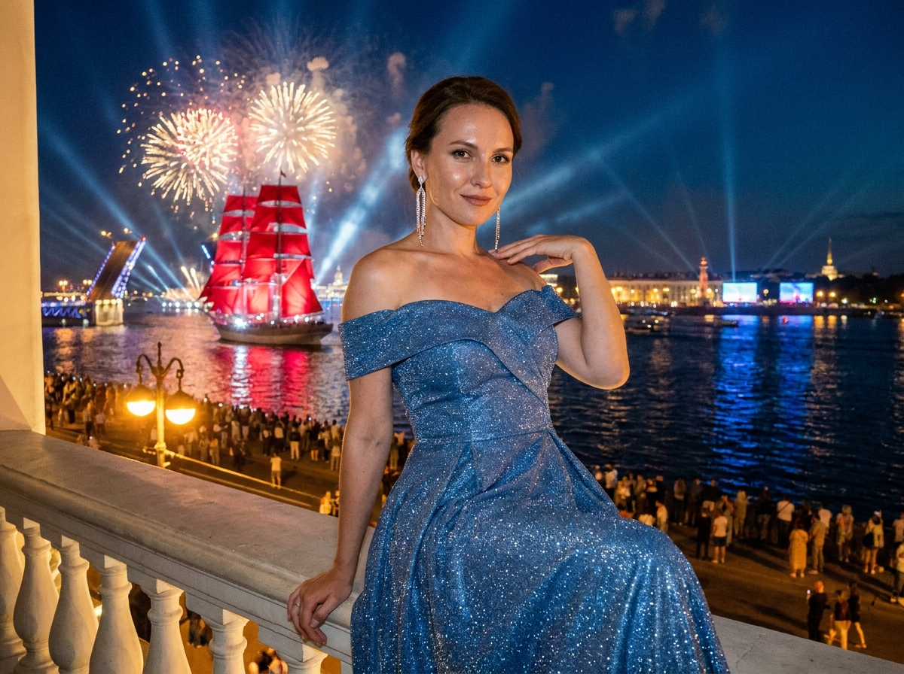
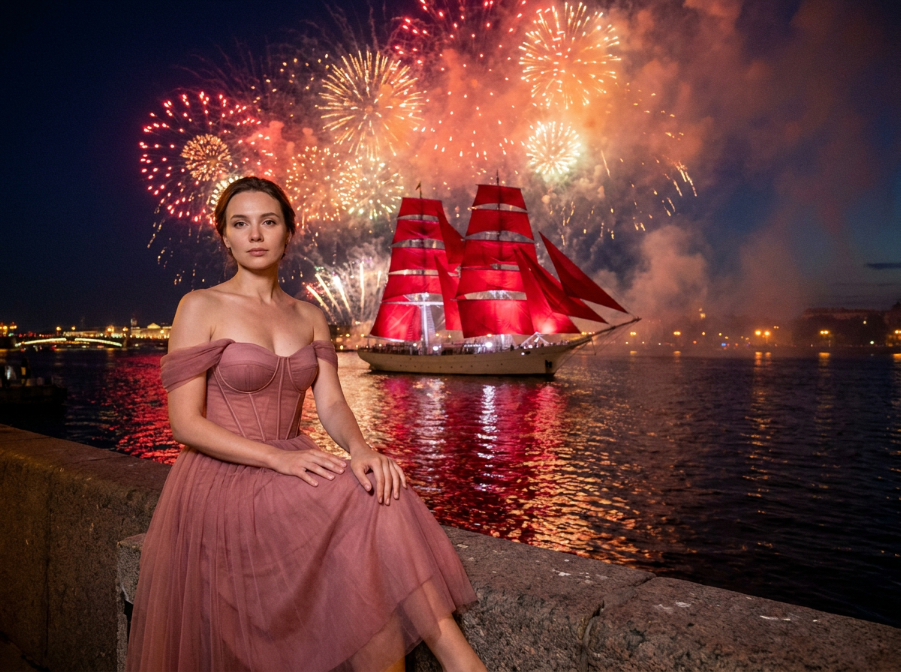
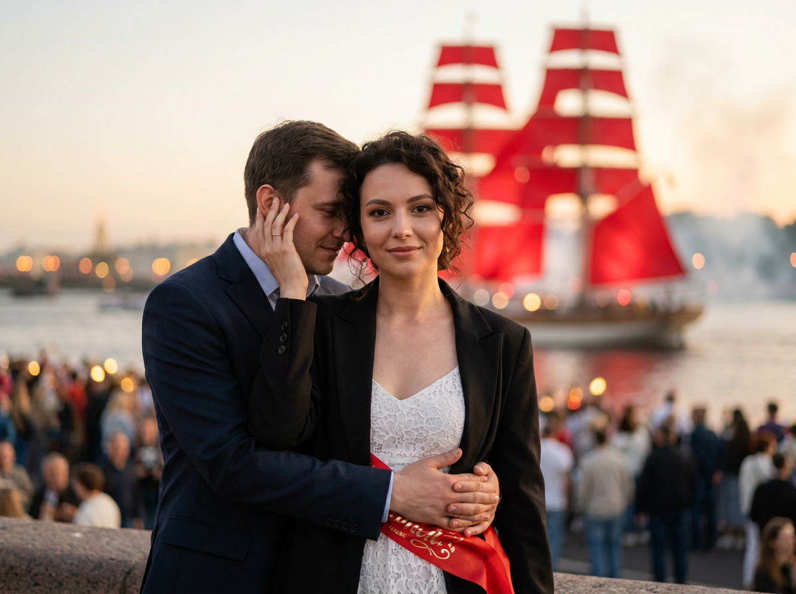
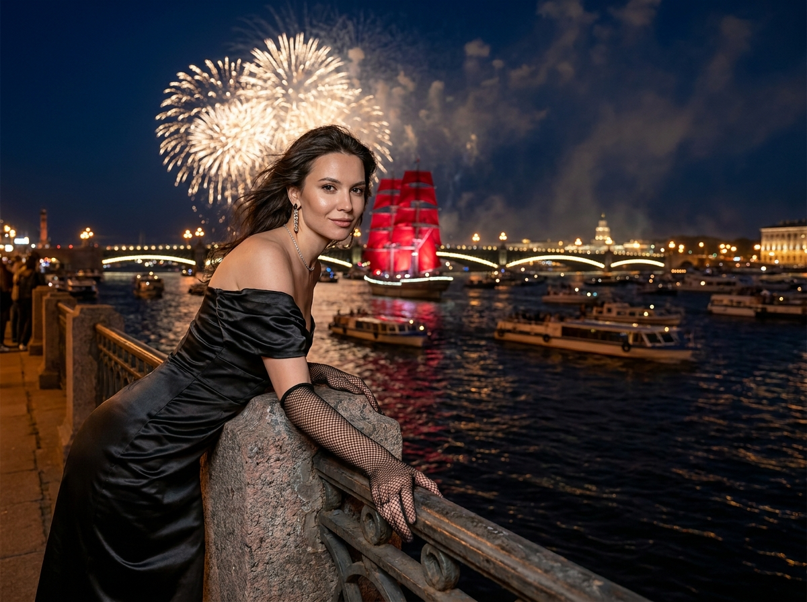
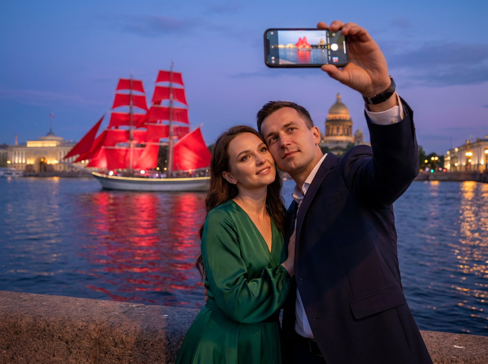
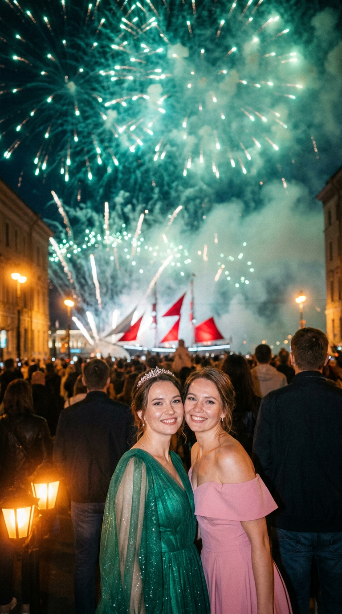
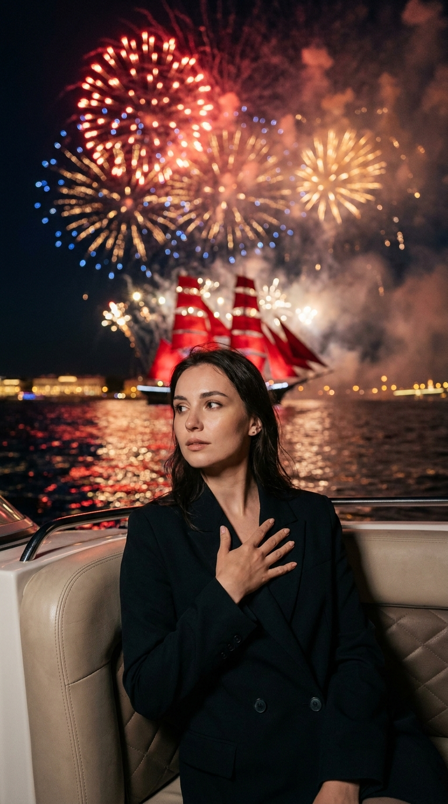
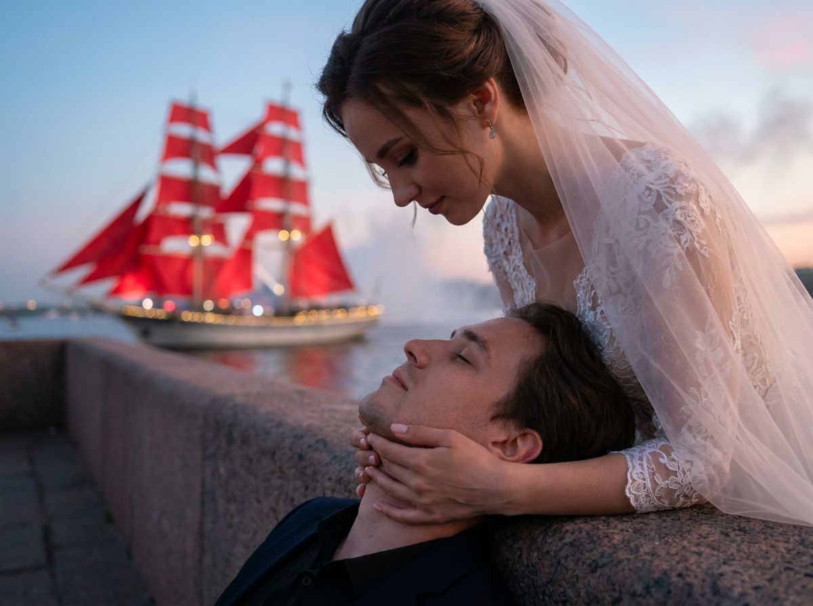
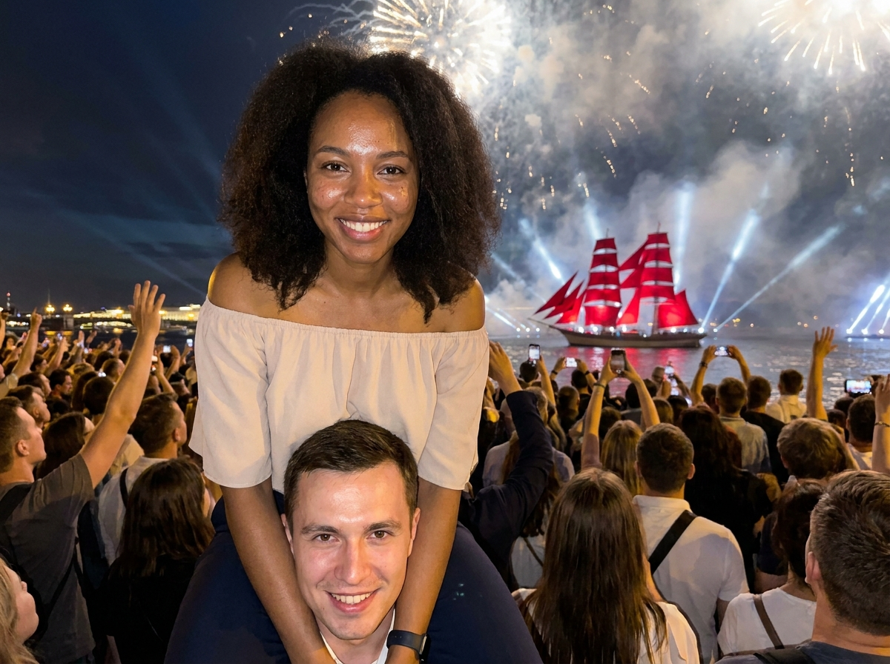
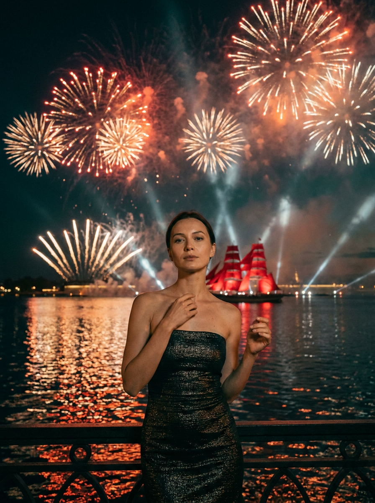

Алые паруса: 10 промптов для фото в нейросети

Обычное фото с праздника «Алые паруса» легко теряется в толпе: лицо темнеет, салют превращается в цветные пятна, а руки и пальцы нейросеть рисует с ошибками. Генерация помогает собрать нужный кадр заранее — с правильной позой, светом, одеждой и атмосферой ночного Петербурга.
Внутри — 10 сценариев для вертикальных кадров: портрет на набережной, снимок на борту, романтическая пара, селфи с телефоном, фото в толпе и эффектный кадр на плечах у парня. Промпты рассчитаны на работу с референсами лиц и подходят для адаптации под собственные фотографии.
Как сгенерировать такое фото: пошагово
Нужен снимок анфас при ровном свете, лицо в кадре целиком, без тёмных очков и головных уборов. Разрешение от 1000 пикселей по короткой стороне. Чем чётче исходник, тем точнее модель повторит черты.
Выберите сценарий ниже и нажмите «Копировать» — текст уйдёт в буфер целиком, вместе с командой сохранения внешности. Эта команда стоит первой строкой и отвечает за то, чтобы на выходе было ваше лицо, а не случайное.
Кнопка «Сгенерировать» рядом с каждым промптом открывает модель в новой вкладке. Nano Banana Pro работает с референсом лица — в отличие от моделей, которые генерируют портрет с нуля и узнаваемость теряют.
Промпт — в поле ввода, портрет — через загрузку референса. Порядок значения не имеет, но без референса команда сохранения внешности работать не будет: модели нечего сохранять.
Для сторис и ленты берите 9:16, для превью и обложек — 4:3. Первый результат редко идеален: если поза или свет ушли не туда, поправьте соответствующую часть промпта и запустите заново. Обычно хватает двух-трёх итераций.
10 промптов для генерации
1. Портрет на верхней палубе
Строго сохранить внешность по загруженному референсу: черты лица, пропорции, мимику и текстуру кожи без изменений. Праздничная ночная сцена в Санкт-Петербурге, гиперреалистичная cinematic-фотография, вертикальный кадр 9:16, ощущение снимка с профессиональной камеры. Используй загруженный портрет как Face Reference / Identity Lock и точно сохрани форму лица, глаза, нос, губы, брови, оттенок кожи и выражение. Я нахожусь на переднем плане, сижу на верхней палубе или у балюстрады, корпус развёрнут к объективу на три четверти. Левая рука держится за край поручня, вторая поднята: локоть выше, кисть возле плеча или головы. Взгляд прямо в объектив, уверенное выражение и лёгкая полуулыбка. На мне голубое мерцающее платье с открытыми плечами, длинные серьги-подвески с бликами, тонкая цепочка. Ветер естественно шевелит волосы. На фоне — Невa, огни города, корабль с алыми парусами и праздничный салют. Реалистичная кожа, вечерний макияж, отражения в глазах, без лишних пальцев и пластиковой ретуши.
2. Розовое платье у Невы

Строго сохранить внешность по загруженному референсу: черты лица, пропорции, мимику и текстуру кожи без изменений. Вертикальная ночная фотография 9:16 в репортажной манере, будто снято на камеру с объективом 50 мм при слабом городском свете. Используй мой портрет как Face Reference / Identity Lock: лицо должно остаться узнаваемым — те же пропорции, разрез глаз, нос, губы, брови, цвет кожи и мимика. Я сижу на парапете набережной в нижней части кадра, плечи немного развёрнуты к камере, голова слегка наклонена. Одна рука спокойно лежит у колена или удерживает край парапета, вторая находится на бедре. Взгляд направлен в объектив либо чуть в сторону, выражение сдержанное и задумчивое. На мне розовое корсетное платье с пышной юбкой миди и открытыми плечами. Волосы выглядят естественно, с отдельными прядями и мягкими бликами от фонарей. За спиной — вода, гранитная набережная, огни Петербурга, корабль с красными парусами и салют. Никаких beauty-фильтров, лишних конечностей и нечитаемого декора.
3. Объятие на фоне салюта

Строго сохранить внешность по загруженному референсу: черты лица, пропорции, мимику и текстуру кожи без изменений. Романтический high-end lifestyle-портрет в свадебной эстетике, вертикальная композиция, камера на уровне глаз, мягкий кинематографичный свет. В центре стою я, а парень находится немного позади и крепко обнимает меня. Моё лицо ближе к объективу, я смотрю прямо в камеру с мягкой улыбкой и спокойным уверенным выражением. Лицо парня видно рядом с моим плечом, но частично закрыто моей рукой или плечом. Для обоих используй Face Reference / Identity Lock: мой референс должен сохранить идентичность без изменений, а его — только если загружена отдельная фотография; при отсутствии второго референса не копируй конкретного человека. Мы стоим на набережной Санкт-Петербурга во время праздника «Алые паруса». На мне вечернее платье с деликатным блеском, у парня аккуратный тёмный костюм. На заднем плане — огни Невы, красные паруса корабля и расфокусированный фейерверк. Натуральная кожа, правильная анатомия рук, лёгкий ветер, малая глубина резкости.
4. Чёрный образ у парапета

Строго сохранить внешность по загруженному референсу: черты лица, пропорции, мимику и текстуру кожи без изменений. Гиперреалистичный праздничный ночной кадр в вертикальном формате 9:16, снятый как дорогая cinematic-фотография. Используй моё фото лица в качестве Face Reference / Identity Lock и не меняй пропорции лица, форму глаз, нос, губы, брови, цвет кожи или выражение. Я нахожусь у парапета набережной и слегка наклоняюсь вперёд к камере. Сижу вплотную к каменному или металлическому краю, одна рука уверенно держит верхний поручень, вторая опирается рядом. Пальцы анатомически корректные, без дубликатов. На руках длинные чёрные перчатки-сетка с хорошо видимой текстурой fishnet. На мне чёрное платье с открытыми плечами, длинные серьги-подвески и тонкая цепочка на шее. Волосы развеваются от ветра естественно, без нарисованных линий движения. Взгляд прямо в объектив, лёгкая полуулыбка. Позади — Нева, вечерние огни, корабль с алыми парусами, густой дым и многочисленные вспышки салюта.
5. Селфи вдвоём у набережной

Строго сохранить внешность по загруженному референсу: черты лица, пропорции, мимику и текстуру кожи без изменений. Ночная гиперреалистичная фотография на набережной Санкт-Петербурга, вертикальный кадр 9:16, эффект живого снимка без постановочной глянцевости. Для двух людей используй отдельные Face Reference / Identity Lock: моё лицо и лицо парня должны сохранять свои реальные черты, пропорции, мимику и оттенок кожи. Я стою слева на переднем плане, парень — справа, мы тесно наклоняемся друг к другу и оба смотрим в объектив. Парень поднимает смартфон перед собой или чуть над нашими головами, словно снимает селфи; телефон обязательно виден, но экран не содержит букв, логотипов и читаемого текста, только реалистичные блики и интерфейс без деталей. Руки держат устройство естественно, пальцы не сливаются и не дублируются. Одежда вечерняя, подходящая для летнего городского праздника. На фоне — толпа, огни мостов, вода, корабль с красными парусами и салют. Свет от экрана смешивается с холодными вспышками фейерверка, лица остаются резкими, задний план уходит в мягкое боке.
6. Диадема и изумрудный фатин

Строго сохранить внешность по загруженному референсу: черты лица, пропорции, мимику и текстуру кожи без изменений. Репортажная cinematic-фотография ночного городского праздника, вертикальный формат 9:16, объектив около 35 мм, естественная лёгкая неидеальность живого события. В центре переднего плана, чуть ниже середины кадра, я улыбаюсь прямо в камеру. Используй моё лицо как Face Reference / Identity Lock и сохрани его без смешивания искажённых черт. Рядом со мной стоит вторая девушка. На мне изумрудное мерцающее платье из фатина и диадема, на второй девушке — розовое платье с открытой линией плеч. Вокруг плотная толпа: люди показаны со спины и в полупрофиль, большинство лиц сильно размыто естественным bokeh, без лишних голов и рук. В небе много салютов с искрами, дымом и залпами разного размера. Основной свет холодный зелёно-бирюзовый, от фонарей добавлены небольшие тёплые оттенки. Дым объёмный, с разной плотностью. На дальнем плане угадываются Нева, городские огни и корабль с алыми парусами. Реалистичные лица, ткань и анатомия.
7. Задумчивый кадр на борту

Строго сохранить внешность по загруженному референсу: черты лица, пропорции, мимику и текстуру кожи без изменений. Ночное cinematic nightlife-фото, вертикальный кадр 9:16, мягкий свет от праздничных огней и реалистичная глубина резкости. Используй загруженное фото как Face Reference / Identity Lock, сохрани мою внешность, пропорции лица, глаза, нос, губы, брови, тон кожи и естественную мимику. Я расположена в правой нижней части изображения, сижу или полусижу в мягком сиденье на борту либо рядом с бортом. Корпус повёрнут вправо, голова слегка отведена в сторону, взгляд проходит мимо камеры, настроение спокойное и задумчивое. Одна рука прижата к груди или заправлена под воротник, словно я держу край пиджака; вторая расслабленно лежит на сиденье. Пальцы прорисованы правильно. Вечерний макияж с ровной, но не пластиковой кожей, чёткой линией глаз, естественными бликами и сатиновыми губами. Украшения минимальны. На мне тёмный пиджак или вечерний образ, волосы аккуратно уложены. За бортом — вода, огни Петербурга, салют и красные паруса, отражённые в ночной реке.
8. Пара у корабля на закате

Строго сохранить внешность по загруженному референсу: черты лица, пропорции, мимику и текстуру кожи без изменений. Кинематографичный свадебно-романтический крупный план у воды, вертикальная композиция, камера расположена низко и немного сбоку на уровне лиц. Мы с парнем почти полностью заполняем передний план. Я нахожусь справа, наклоняюсь над ним, наши лица близко; выражение нежное, без чрезмерной постановочности. Используй два Face Reference / Identity Lock: моё лицо и лицо парня должны остаться узнаваемыми, без смешения черт; если его фото нет, создай нейтральный образ без имитации конкретной личности. На заднем плане вдали виден корабль «Алые паруса» с насыщенно-красными парусами и огнями. Время — blue hour после заката: голубой градиент неба, розово-персиковые облака, лёгкая дымка над водой. Одежда пары выглядит празднично и романтично, ткань и волосы переданы фотореалистично. Используй мягкий контровой свет, естественные отражения в глазах, небольшую глубину резкости и детализацию уровня профессиональной свадебной съёмки. Паруса должны читаться, но оставаться дальним акцентом.
9. На плечах в праздничной толпе

Строго сохранить внешность по загруженному референсу: черты лица, пропорции, мимику и текстуру кожи без изменений. Гиперреалистичный вертикальный снимок в стиле ночного iPhone-фото со встроенной вспышкой и computational photography. Камера находится внутри толпы и смотрит немного снизу вверх. Я сижу на плечах у парня: моя голова и плечи расположены в верхней части кадра, лицо чётко в фокусе, парень находится ниже и позади, видны его голова, шея и плечи. Мы оба смотрим прямо в объектив. Используй моё загруженное лицо как Face Reference / Identity Lock и сохрани его реальные черты без искажений. Для парня добавь отдельный референс, если он есть; без него сделай нейтральный образ с тёмными волосами и вечерней одеждой, не угадывая личность. Вокруг плотная праздничная толпа, видны поднятые руки, смартфоны и размытые силуэты, но без лишних пальцев, голов и анатомических ошибок. Вспышка подсвечивает лица и одежду, фон остаётся контрастным и слегка зернистым. На заднем плане — салют, огни набережной, Нева и корабль с алыми парусами. Сохранить ощущение настоящего случайного кадра.
10. Тёмное платье и фейерверк

Строго сохранить внешность по загруженному референсу: черты лица, пропорции, мимику и текстуру кожи без изменений. Праздничная гиперреалистичная cinematic-фотография ночью, вертикальный формат 9:16. Я стою в центре у набережной, корпус слегка развёрнут, лицо спокойно и задумчиво, губы мягко сомкнуты. Одна рука находится у верхней части тела, в зоне декольте, вторая опущена или помогает удерживать равновесие. Используй моё фото как Face Reference / Identity Lock и точно сохрани форму лица, взгляд, нос, губы, брови, тон кожи и мимику, без превращения в другого человека. На мне тёмное чёрное платье без рукавов, с линией бандо; фактура ткани заметна, на поверхности мягко отражаются городские огни. Украшения лаконичные, серьги небольшие и реалистичные. Волосы уложены естественно, отдельные пряди подсвечены вспышками салюта, без графичных следов движения. В небе очень много фейерверков: крупные и мелкие залпы, веера, звёздные вспышки, искры и объёмный дым. Внизу — огни Петербурга, вода и корабль с алыми парусами. Лицо освещено мягко, кожа натуральная, руки анатомически правильные.
Что важно учесть в этом стиле
Для «Алых парусов» лучше работает вертикальный формат 9:16: он оставляет место и для человека, и для высокого неба с салютом. Укажите точку съёмки, положение рук, направление взгляда и фокус. Если этого не сделать, нейросеть начнёт самостоятельно менять позу, а пальцы и украшения могут потерять форму.
Ночной кадр не должен быть равномерно залит светом. Добавляйте конкретные источники: вспышку смартфона, тёплые фонари, холодные отблески фейерверка, отражения в воде. Для реалистичного результата подойдут параметры вроде 35 или 50 мм, диафрагмы f/1.8–f/2.8, мягкого боке и разрешения от 2048 пикселей по длинной стороне. На один сюжет лучше заложить 4–8 генераций.
Идеи для вариаций
- Заменить салют на момент, когда корабль проходит под разведённым мостом.
- Сделать кадр через плечо человека из толпы, оставив лицо в резкости.
- Добавить мокрый гранит после дождя и длинные отражения огней на набережной.
- Попросить стиль плёночной камеры с лёгким зерном, но сохранить натуральную кожу.
- Перенести сцену на прогулочный теплоход и показать паруса в боковом контровом свете.
- Сделать диптих: портрет до начала салюта и тот же образ на фоне финального залпа.
Как собрать свой промпт
Начните с технической основы: гиперреалистичное фото, вертикальный кадр 9:16, время суток, фокусное расстояние и характер света. Затем опишите героя: где он стоит или сидит, куда смотрит, что делают руки, какая эмоция на лице. Положение тела лучше задавать короткими отдельными фразами, а не длинным перечислением.
После этого добавьте одежду, аксессуары, фон и детали праздника. Для референса лица используйте отдельный блок с требованием сохранить идентичность, но не ставьте его первым — сначала опишите сцену. В финале укажите ограничения: без лишних пальцев, двойных лиц, текста на экране, пластиковой кожи и случайных логотипов.
Ошибки, из-за которых кадр не получается
- Слишком много объектов в одном плане. Если одновременно требовать толпу, корабль, салют, мост, телефон и крупный портрет, часть деталей исчезнет. Разделяйте главный и дальний планы.
- Не задана геометрия рук. Уточняйте, где находится каждая рука и что она держит. Добавляйте запрет на лишние пальцы и слияние кистей.
- Лицо описано только словом «похожее». Для узнаваемости нужен качественный референс и прямое указание не менять пропорции и мимику.
- Салют превращён в белую засветку. Указывайте цвет, дым, форму залпов и разные размеры вспышек, а также оставляйте лицо отдельной зоной экспозиции.
- Толпа выглядит ненатурально. Просите показывать людей со спины и размывать дальние лица, иначе модель добавит лишние глаза, руки и головы.
Частые вопросы
Как сделать такое ИИ-фото бесплатно?
Можно попробовать Kandinsky и Шедеврум, а также бесплатные режимы Krea AI и Arena.ai, если они доступны в вашем регионе. У бесплатных вариантов часто есть очередь, лимит генераций, более низкое разрешение и слабая работа с точным референсом лица. Для узнаваемого портрета обычно приходится сделать несколько попыток и отдельно улучшить удачный кадр.
Как сохранить своё лицо на всех вариантах?
Загрузите чёткий портрет без сильных фильтров, очков и перекрывающих лицо прядей. В промпте укажите Face Reference / Identity Lock и перечислите ключевые черты, которые нельзя менять. Сначала зафиксируйте лицо и общий образ, а уже потом экспериментируйте с салютом, одеждой и ракурсом.
Почему нейросеть портит руки и телефон?
Сложные кисти, перекрещенные пальцы и смартфон возле лица создают сразу несколько зон риска. Опишите положение каждой руки, число видимых пальцев и угол телефона. Если экран не является главным объектом, попросите убрать с него текст, логотипы и мелкие детали.
Как сделать красные паруса заметными на ночном фото?
Не прячьте корабль за главным героем: укажите его место в кадре, размер и расстояние. Добавьте насыщенный красный цвет парусов, тёплые огни на борту и отражение в воде. Салют лучше сделать холодным или бело-золотым, чтобы он не спорил с главным красным акцентом.